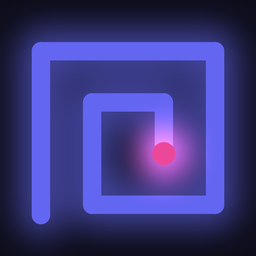
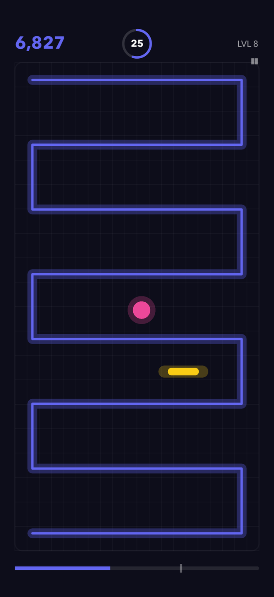
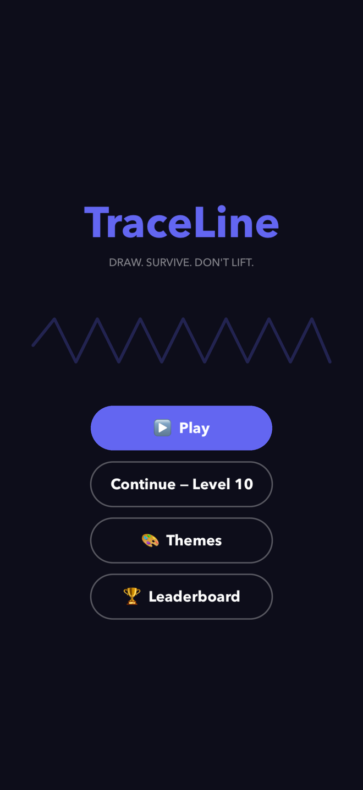
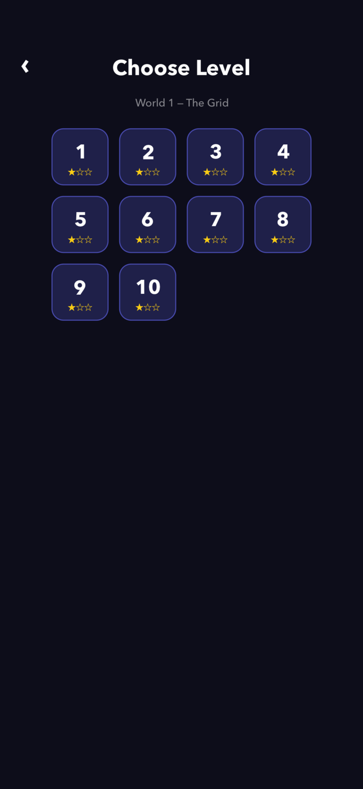
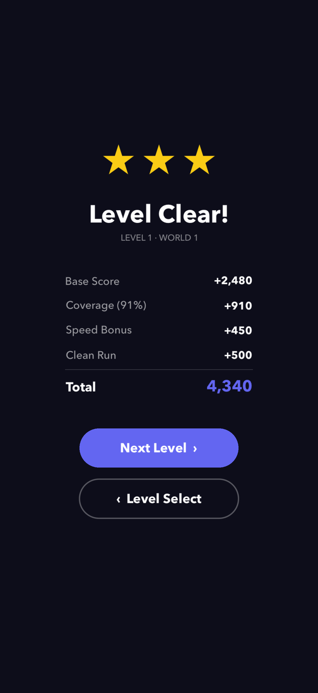
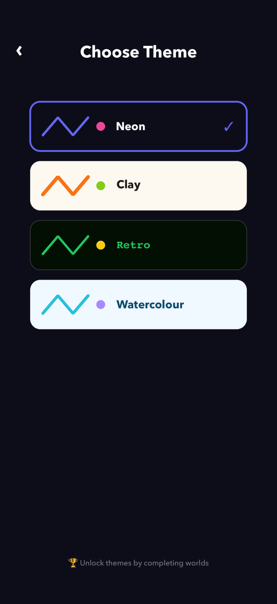

TraceLine
DRAW. SURVIVE. DON'T LIFT.
Press your finger to the screen and a line follows it. Fill the board before the clock runs out. Lift your finger and the round is over — cross your own line and it's over too.
In TestFlight beta — coming to the App Store
Never lift your finger
The instant contact breaks, the round ends. No pausing to think, no repositioning. Whatever you were going to do, you commit to it now.
Lines can never cross
Your own path is the hazard. Every stroke you draw is one more wall you have to avoid — the board fills up with your own mistakes.
Your line is the obstacle
Plan too little and you strand yourself in a corner with nowhere legal to go. Take too long and the timer beats you. From level 6, obstacles fall from the top of the screen.





What's in it
Built for iPhone. iOS 16 and later.
- One-finger controls. Anyone can play it, nobody can relax.
- 10 hand-tuned levels across World 1
- Four themes: Neon, Clay, Retro, Watercolour
- Three stars per level — clear it, clear it fast, clear it clean
- Game Center leaderboard and achievements
- No ads, no in-app purchases, no account
- Plays entirely offline
- Open source, under active development